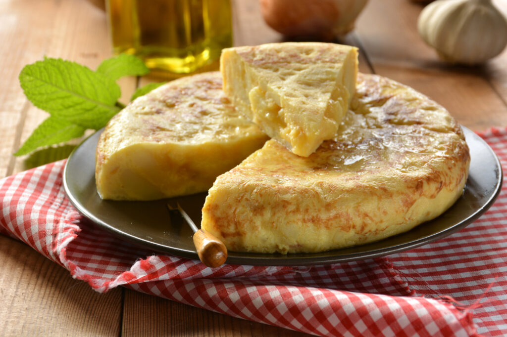

Omelette

Discription
Spanish omelettes are wonderful things and this simple Spanish omelette makes it easy.
Also known as a Spanish tortilla, the Spanish omelette features potatoes and a lot of egg. Omelette is the European spelling Omelet is the American.
Ingredients
- 1 whole yellow onion, peeled and chopped into ¼’’ chunks
- 6-7 potatoes, peeled
- 5-6 large eggs
- Salt to taste
- 3 cups olive oil
Steps
- Cut the potatoes into ⅛ thick slices and add them to a bowl.
- Add the chopped onions to the same bowl and add a dash of salt to season; toss well to mix.
- Heat olive oil in a large frying pan, over moderately high flame and spread the onion-potato mixture evenly across the skillet.
- Lower the heat if necessary to prevent the potatoes from burning.
- Cook the veggies until they are cooked through; test the doneness of the potatoes by poking them with a fork or skewer.
- Drain out the veggies with a slotted spoon and transfer them to a bowl lined with paper towel to soak away extra oil.
- Crack the eggs into a large bowl and whisk them thoroughly with a fork until they turn into a pale yellowsh mixture without any white strands.
- Add the fried onion-potato mixture to the whisked eggs and stir them well together until the former are distributed evenly throughout the beaten eggs.
- Drizzle 2 tbsp olive oil on a smaller frying pan and heat it over moderate flame but don't let it smoke to stop the omelette from burning.
- Give another stir to the egg-veggie mixture and pour it into the pan.
- Tilt the pan slightly to spread it evenly throughout the pan and cook it until it is set around the sides.
- Lift one of its side carefully with a spatula to check the doneness of the omelette; it should be browned slightly while the interiors should e slightly runny.
- Place a flat plate on top of the frying pan and flip it over to transfer the omelette to the plate.
- Return the pan to heat and pour enough oil in it so that it stands about 1" from the base.
- Heat it for about half a minute and return the omelette back to the pan.
- Cook it for about 5 minutes and remove from heat.
- Let it rest for a couple of minutes and then slide the omelette to a serving plate.
- Serve it as a main course or slice it into 6-8 squares to turn it into an appetizer.